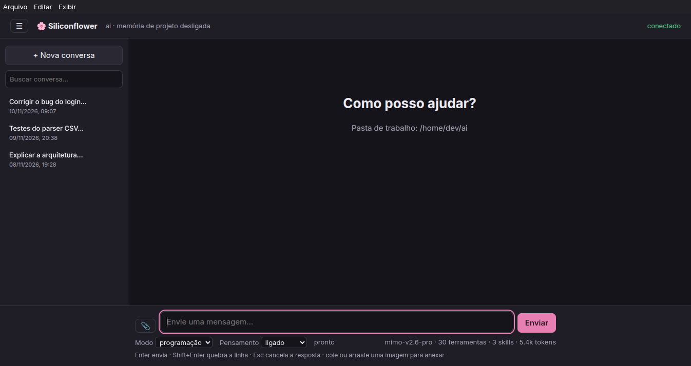
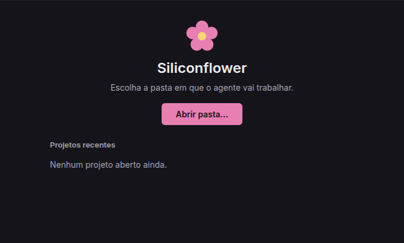

App de desktop
Uma janela por projeto, configuração sem terminal e conversas salvas para retomar depois. Prefere o navegador? siliconflower gui.
O Siliconflower lê o seu projeto, edita arquivos, roda comandos e delega tarefas a subagentes, tudo num app de desktop para Windows e Linux. Você escolhe o modelo e vê cada passo na tela.
Open source (MIT) · Windows 10/11 e Linux x86_64 · use a sua própria chave de API

recursos
Feito para trabalhar no repositório de verdade, com você no controle de cada ação.
Uma janela por projeto, configuração sem terminal e conversas salvas para retomar depois. Prefere o navegador? siliconflower gui.
Delegue pesquisa, plano, código ou verificação a subagentes, em paralelo ou em background, e acompanhe tudo pela barra lateral.
Um SILICONFLOWER.md ou AGENTS.md traz suas instruções e liga a memória do projeto, guardada fora do repositório.
Modos programação, sistema e plano (só leitura) e nível de pensamento, escolhidos direto na interface.
Mudanças isoladas em .worktrees/<branch> e um mapa de símbolos (TS, JS, Python, Go, Rust) que gasta poucos tokens.
Servidores MCP por stdio ou HTTP, comandos disparados por eventos e instruções em Markdown carregadas quando fazem sentido.
Cole, arraste ou anexe imagens em qualquer provedor; áudio e vídeo na API Xiaomi MiMo. Até 4 arquivos por mensagem.
Busque e renomeie conversas, edite e reenvie a última mensagem, e encerre tarefas em background com um clique.
Compilado com o Bun: o app já traz o agente, sem precisar instalar Node.js nem Bun.
como funciona
.deb ou AppImage.Esc para parar.
modelos
Funciona com qualquer API compatível com a da OpenAI. Troque de provedor ou de modelo a qualquer momento.
/v1 compatívelferramentas
Além das que você conectar por MCP. Elas aparecem para o modelo e, para você, como cartões na conversa.
download · v0.9.1
Grátis e de código aberto. Na primeira vez o app pede provedor, chave e modelo.
Windows 10 ou 11 (x64). Não pede administrador.
Baixar instalador.exeO instalador não é assinado: se o SmartScreen avisar, clique em Mais informações e depois em Executar assim mesmo.
x86_64 · Ubuntu 18.04, Debian 10, Fedora 28 ou mais novas.
Baixar para Debian/Ubuntu.debNo .deb: sudo apt install ./Siliconflower-*-amd64.deb. Não instale o pacote fuse; o .deb e o script não precisam dele.
Requer Bun ≥ 1.3. Abre a interface no navegador, com o assistente de configuração na primeira vez.
O agente roda comandos com os seus privilégios e não tem sandbox. Leia o SECURITY.md antes de dar acesso ao seu computador, e use o modo plano quando quiser só leitura.
Baixe o Siliconflower, conecte o seu modelo favorito e deixe o agente cuidar do trabalho repetitivo.